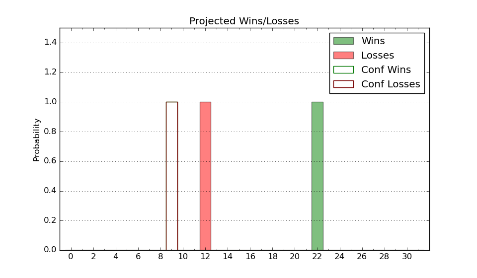

| Home | Game Probabilities | Conferences | Preseason Predictions | Odds Charts | NCAA Tournament |
| City: | Baton Rouge, Louisiana | |
| Conference: | SEC (5th)
| |
| Record: | 9-9 (Conf) 22-12 (Overall) | |
| Ratings: | Comp.: 20.7 (20th) Net: 20.7 (20th) Off: 106.6 (86th) Def: 85.9 (4th) SoR: 69.9 (38th) |
| Remaining | ||||||
|---|---|---|---|---|---|---|
| Date | Opponent | Win Prob | Pred. | |||
| Previous | Game Score | |||||
| Date | Opponent | Win Prob | Result | Off | Def | Net |
| 11/9 | Louisiana Monroe (287) | 97.7% | W 101-39 | 17.9 | 23.7 | 41.6 |
| 11/12 | Texas St. (122) | 89.9% | W 84-59 | 15.0 | -8.8 | 6.1 |
| 11/15 | Liberty (115) | 89.4% | W 74-58 | -4.2 | 4.4 | 0.2 |
| 11/18 | McNeese St. (308) | 98.2% | W 85-46 | -6.6 | 20.2 | 13.7 |
| 11/22 | Belmont (71) | 81.3% | W 83-53 | 7.2 | 19.2 | 26.5 |
| 11/26 | (N) Penn St. (82) | 72.4% | W 68-63 | -1.8 | -5.7 | -7.5 |
| 11/27 | (N) Wake Forest (35) | 60.0% | W 75-61 | 7.7 | 11.2 | 18.9 |
| 12/1 | Ohio (129) | 90.9% | W 66-51 | -13.9 | 16.1 | 2.2 |
| 12/11 | @Georgia Tech (150) | 78.2% | W 69-53 | -11.4 | 11.6 | 0.2 |
| 12/14 | Northwestern St. (324) | 98.6% | W 89-49 | 1.7 | 9.9 | 11.5 |
| 12/18 | (N) Louisiana Tech (98) | 77.7% | W 66-57 | -9.0 | 11.5 | 2.5 |
| 12/22 | Lipscomb (264) | 97.1% | W 95-60 | 3.4 | 2.8 | 6.2 |
| 12/29 | @Auburn (14) | 27.6% | L 55-70 | -21.0 | 6.9 | -14.1 |
| 1/4 | Kentucky (8) | 47.6% | W 65-60 | -11.2 | 16.9 | 5.7 |
| 1/8 | Tennessee (9) | 48.0% | W 79-67 | 15.2 | -1.3 | 13.9 |
| 1/12 | @Florida (48) | 49.0% | W 64-58 | -1.2 | 12.9 | 11.7 |
| 1/15 | Arkansas (23) | 68.1% | L 58-65 | -17.7 | -3.1 | -20.9 |
| 1/19 | @Alabama (30) | 43.0% | L 67-70 | -7.8 | 12.0 | 4.2 |
| 1/22 | @Tennessee (9) | 21.3% | L 50-64 | -11.4 | 0.1 | -11.2 |
| 1/26 | Texas A&M (53) | 77.5% | W 70-64 | 4.7 | -7.5 | -2.9 |
| 1/29 | @TCU (32) | 44.1% | L 68-77 | 10.8 | -16.3 | -5.5 |
| 2/1 | Mississippi (102) | 87.7% | L 72-76 | -2.7 | -31.6 | -34.2 |
| 2/5 | @Vanderbilt (58) | 51.7% | L 66-75 | 1.5 | -11.1 | -9.6 |
| 2/8 | @Texas A&M (53) | 50.2% | W 76-68 | 8.9 | -1.6 | 7.3 |
| 2/12 | Mississippi St. (50) | 76.7% | W 69-65 | -2.5 | -0.7 | -3.2 |
| 2/16 | Georgia (215) | 95.4% | W 84-65 | -2.0 | -6.2 | -8.2 |
| 2/19 | @South Carolina (101) | 67.4% | L 75-77 | 11.5 | -18.7 | -7.2 |
| 2/23 | @Kentucky (8) | 21.0% | L 66-71 | 6.8 | -5.9 | 1.0 |
| 2/26 | Missouri (144) | 92.1% | W 75-55 | 3.8 | 0.5 | 4.3 |
| 3/2 | @Arkansas (23) | 38.5% | L 76-77 | 10.9 | -9.1 | 1.9 |
| 3/5 | Alabama (30) | 72.0% | W 80-77 | 2.9 | -6.3 | -3.3 |
| 3/10 | (N) Missouri (144) | 86.4% | W 76-68 | 2.3 | -10.3 | -8.0 |
| 3/11 | (N) Arkansas (23) | 53.6% | L 67-79 | -2.2 | -19.2 | -21.4 |
| 3/18 | (N) Iowa St. (54) | 65.5% | L 54-59 | -13.6 | -5.5 | -19.1 |
| Stats & Trends | |||||
|---|---|---|---|---|---|
| Current | Day | Week | Month | Season | |
| Composite | 20.7 | -0.5 | -0.5 | -3.1 | +2.5 |
| Comp Rank | 20 | -1 | -2 | -3 | +27 |
| Net Efficiency | 20.7 | -0.5 | -0.5 | -3.1 | -- |
| Net Rank | 20 | -1 | -2 | -3 | -- |
| Off Efficiency | 106.6 | -0.3 | -0.4 | -0.2 | -- |
| Off Rank | 86 | -1 | -1 | +14 | -- |
| Def Efficiency | 85.9 | -0.2 | -0.1 | -2.9 | -- |
| Def Rank | 4 | -- | -1 | -3 | -- |
| SoS Rank | 31 | +4 | +4 | -7 | -- |
| Exp. Wins | 22.0 | -- | -- | -0.0 | +2.5 |
| Exp. Conf Wins | 9.0 | -- | -- | -1.0 | -0.4 |
| Conf Champ Prob | 0.0 | -- | -- | -- | -5.2 |

| Advanced Stats | ||
|---|---|---|
| Stat | Value | Rank |
| Off Eff FG % | 0.514 | 129 |
| Off Ast Ratio | 0.139 | 179 |
| Off ORB% | 0.355 | 12 |
| Off TO Rate | 0.157 | 180 |
| Off FT Ratio | 0.339 | 81 |
| Def Eff FG % | 0.434 | 9 |
| Def Ast Ratio | 0.116 | 25 |
| Def ORB% | 0.255 | 152 |
| Def TO Rate | 0.221 | 3 |
| Def FT Ratio | 0.364 | 305 |